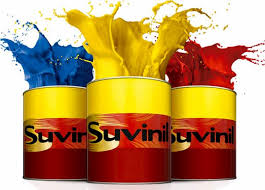
Encontre a cor perfeita para o seu projeto
Explore nosso catálogo digital e conheça a variedade de marcas e acabamentos que oferecemos.
Nossas Linhas de Tintas
Linha Imobiliária
Tintas acrílicas, látex, esmaltes e vernizes para casas, escritórios e prédios.
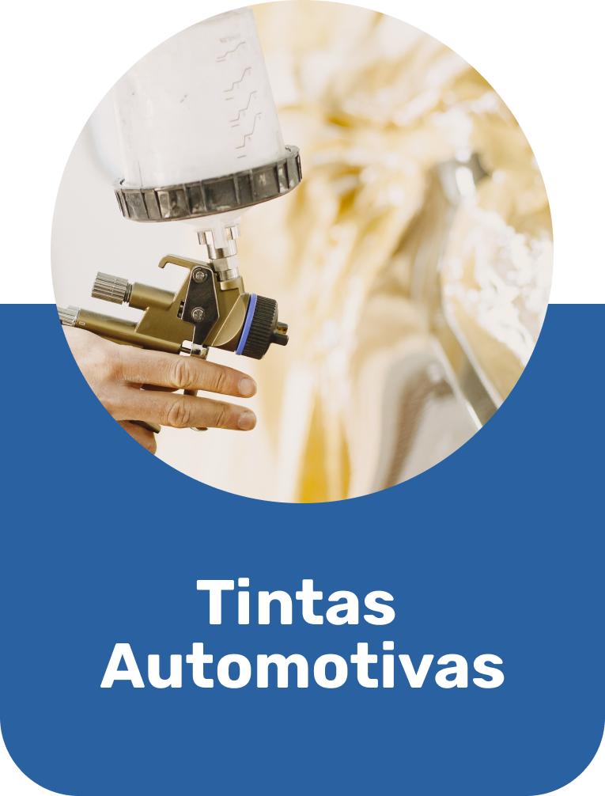
Linha Automotiva
Primers, tintas poliéster, poliuretano e vernizes para reparação de veículos.
Paleta de Cores — Suvinil Rende e Cobre Muito
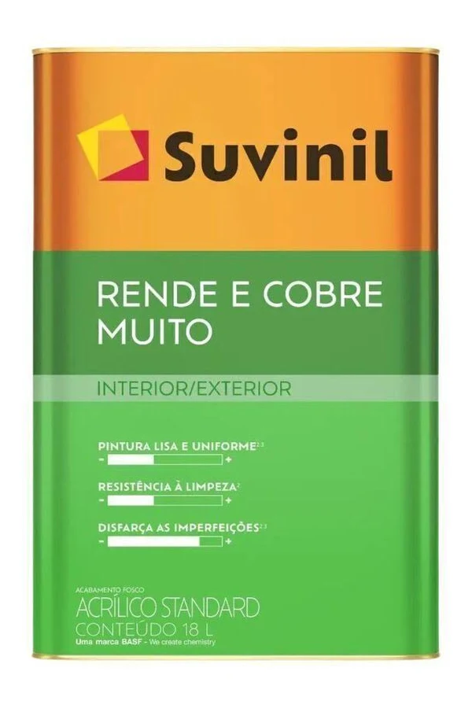
Acabamento: Fosco | Uso: Área Interna / Externa
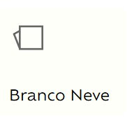
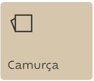
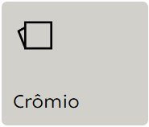
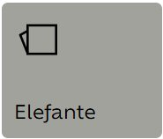
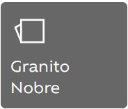
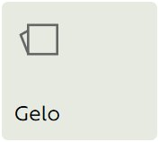
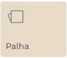
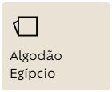
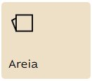
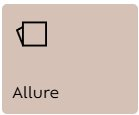
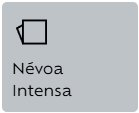
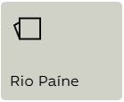
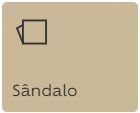
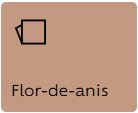
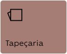
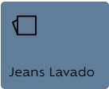
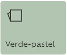
Sobre Nós
A AB Tintas é referência no mercado de tintas e revestimentos, oferecendo as melhores marcas do país. Nosso compromisso é apresentar soluções completas para pintura imobiliária, automotiva e industrial.
Nossa página funciona como um mostruário virtual para que você conheça nossos produtos e se inspire antes de realizar a sua pintura. Conte com a nossa tradição e variedade!
Entre em contato
Gostou de algum tom ou produto? Contatos e mais informações:
- WhatsApp: (34) 3421-9999
- Endereço: Avenida Presidente - Av. Pres. Juscelino Kubitschek, 1527 - Progresso, Frutal - MG.
- Horário de funcionamento: Seg a Sex: 8h-18h | Sab 8h-12h
Entrar em contato